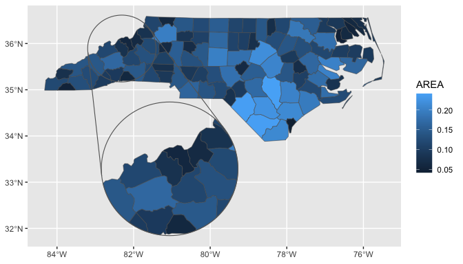

Add zoomed inset panels to your ggplot maps.
Installation
You can install ggmapinset like so:
# CRAN release
install.packages('ggmapinset')
# development version
install.packages('ggmapinset', repos = c('https://cidm-ph.r-universe.dev', 'https://cloud.r-project.org'))Replacing ‘ggplot2’ sf layers
ggmapinset provides drop-in replacements for each of the sf-related layers from ggplot2:
| ‘ggplot2’ function | ‘ggmapinset’ replacement |
|---|---|
geom_sf() |
geom_sf_inset() |
geom_sf_text() |
geom_sf_text_inset() |
geom_sf_label() |
geom_sf_label_inset() |
stat_sf() |
stat_sf_inset() |
stat_sf_coordinates() |
stat_sf_coordinates_inset() |
coord_sf() |
coord_sf_inset() |
The replacements work the same as their normal versions but copy, zoom, and clip the layers to make the inset work. The stats can be used to add inset support to geoms from third-party packages. For extension developers, tools are provided to make sf-based layers inset-aware (see {ggautomap} for examples).
Example
This example adds an inset to the first example from ggplot2::geom_sf(). The inset area is defined as a circle centred on the named county, with radius 50 miles. The inset is enlarged by a factor of 2 and shifted to an empty part of the map.
library(ggmapinset)
library(ggplot2)
# load the North Carolina map example shipped with sf
nc <- sf::st_read(system.file("shape/nc.shp", package = "sf"), quiet = TRUE)
# find the centroid of the specified county
inset_centre <- sf::st_centroid(sf::st_geometry(nc)[nc$NAME == "Yancey"])
# pick some counties to label
labelled_counties <- sample(nc$NAME, 10)
# the basic ggplot example:
base_plot <- ggplot(nc) +
geom_sf(aes(fill = AREA)) +
geom_sf_label(aes(label = NAME), data = ~dplyr::filter(.x, NAME %in% labelled_counties)) +
coord_sf()
# the same plot with an inset zooming in on one area:
ggplot(nc) +
# replace sf layers with their `_inset` versions
geom_sf_inset(aes(fill = AREA)) +
# add the inset frame (the two circles with the connecting lines)
geom_inset_frame() +
geom_sf_label_inset(aes(label = NAME), data = ~dplyr::filter(.x, NAME %in% labelled_counties)) +
# configure the inset in the coordinate system so that all layers can see it
coord_sf_inset(inset = configure_inset(centre = inset_centre, scale = 2, units = "mi",
translation = c(70, -180), radius = 50))
For more information, see the online documentation and vignette("ggmapinset").